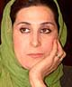

|
|
|
Browsing
Contact Us |
Campaigners |
Face to Face |
Tribune |
Interview |
News |
On the Web |
One Million |
Report
Farsi | Français | German | Italian | Spanish | العربية Also in this section
|
 The Fate of Women in Iran?Saturday 6 March 2010 View online : News Blaze Fatemeh Simin Motamed-Arya, 49, is one of Iran’s best-known and loved actresses. Starting with theatre, she quickly adapted to Iran’s vibrant cinema scene and today has over 40 films to her credit. But what’s even more interesting about Motamed-Arya is her political activism. She is an active campaigner for the green movement that is currently rocking Iran. Pamela Philipose interviewed her in New Delhi recently, where she spoke about her career as an artist, the status of women in Iran and the political upheaval in Iran. Q: What is the present status of Iranian women? A: I think one simple example could answer your question: More than 70 per cent of students in universities in Iran today are women. This shows the tremendous desire of the ordinary woman in my country to realise her full potential. You can understand then why they are so active in Iranian society. Incidentally, a lot of the social welfare work in Iran is being done by charities, not by the government. Here again, women play a significant role in running them. Q: How do you see yourself as a woman in Iranian society today? A: Even though I see myself as an intellectual and working woman, I also want to claim my traditional self. Because I believe that in being a good neighbour, or a good daughter to my father, I am helping society. In being a good mother, I can help my son understand his world better and to grow up with a greater knowledge of the world. So although I am not a traditional person, there are many traditional concerns I have. I try to combine the modern and the traditional because I believe a tree cannot grow if it is not connected to the soil by its roots. You have to have your roots and then reach out to the sky. There can by no denying that women are stronger than men in today’s society, anywhere in the world. Notice, for instance, how women can do so many things at the same time, how easily they multi-task, not just within the home but within larger society. Q: But is it tough, as a woman, to work in films in Iran? A: First, I feel I am an artist. I am not a woman, not a man, I am an artist. To my mind, my work is the only material I have to show the world that I am human. Q: Tell me a little bit about yourself. How did you get into theatre? A: I was associated with a cultural group as a young child of 14. Then I went to university. In 1979, I graduated from the Tehran Faculty of Arts, having majored in acting. After the revolution that year, when they shut down all the theatres, I moved to cinema. Now I have done more than 40 films in my 26 years in Iranian cinema. Q: Which would you consider your most memorable film role? A: I think it’s the one I essayed of Gilane, in a 2005 film by the same name directed by Mohsen Abdolvahab and Rakhshan Bari. Gilane is a peasant woman caught up in the ten year Iran-Iraq war. The film revolves around the story of a mother’s courage and vision in very tough times. It is a profoundly anti-war film. Q: What is the situation like in your country today? A: These are not normal times in Iran. The situation is very complex because nobody knows in which direction the government wants to go. After the election, things have turned very difficult for the citizen. Many among us have found ourselves coming under attack. All the good journalists have left Iran; most intellectuals have also left. They cannot do anything within the country because they are subject to persecution. For instance, when they kept my passport, in order to prevent me from travelling abroad, I felt so helpless. I don’t care about my passport for itself but when somebody takes away something that belongs to you, you feel terrible. How can anyone exercise such power over someone else? Mine is a small experience. Many intellectuals and journalists have been killed. Q: How united is this opposition? A: Opposition leader, Mirhossein Mousavi, made the colour green a symbol of the resistance to Ahmadinejad’s rule. Now there is a huge chain, a great wave of green. This is a movement for the freedom of the people. It is a movement that is uniting the very poor and the very rich. Iranians living all over the world have come forward to support this colour. And some of the most important voices of the opposition are those of women. These women, who for these 30 years are searching for ways to acquire a presence, have now come to represent a certain power within Iranian society. Today they are using that power because they know that as mothers of the emerging generation and as wives of the men of the present generation, they need a new political system. I believe that women can change many things once they have made up their minds. Q: What is the significance of the colour green in this movement? A: Green is associated with Islam. When we talk about the colour green, we are talking of basic universal values. This colour holds a lot of significance for us Iranians as a people. |